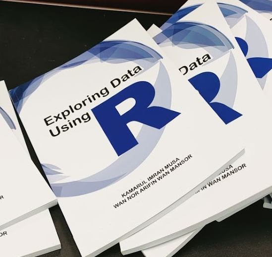
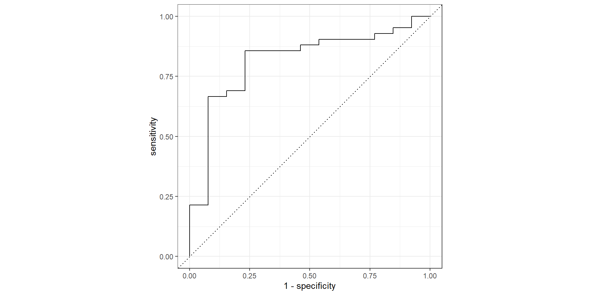
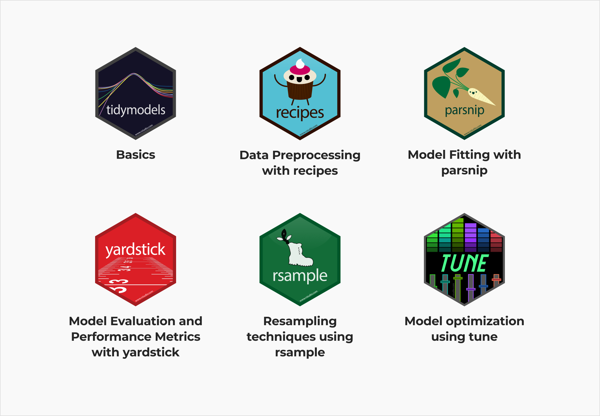
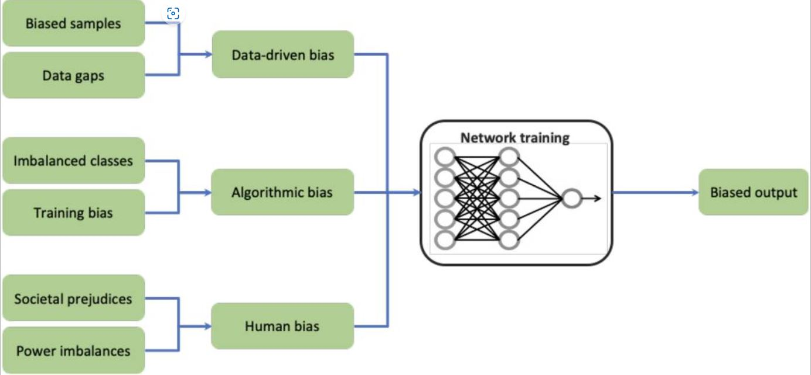
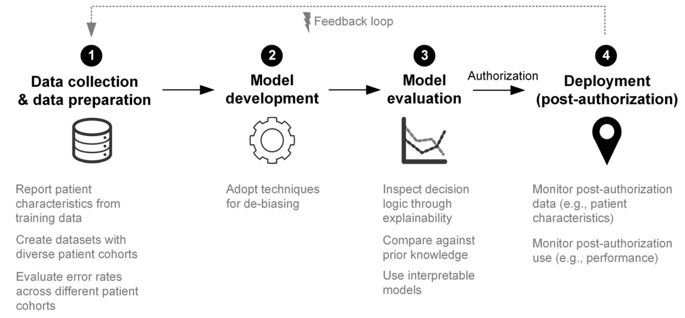

Making Prediction Using Tidymodels in Medicine
![]()
School of Medical Sciences, Universiti Sains Malaysia
Motivation
Physician usually have these roles when looking at patients data.
- to understand factors why patients develop certain diseases (inference)
- to guess the outcomes for patients (prediction)
This talk is about the second role.
For example, physicians working at ED will want to guess the correct triage category when a patient is brought to ED:
- patient A with fever, loss of appetite and lethargy
- patient B with chest pain, sweating and history of diabetes
Limitation
However, physicians’ minds, no matter how bright or experienced will not able
- to store, recall, and correctly analyze many medical information
- to optimally and accurately guess the outcome
Predictive analytics will physicians to make more accurate guess:
- uses machine learning or ML
- allows clinicians to augment his guess by computers
- analysed data such as many complains, signs and symptoms and clinical conditions (human only rely on their brains and experience).
The end result is more accurate guess or prediction.
About me

I am a medical epidemiologist and a fellow of the American College of Epidemiology.
These are the links for my SCOPUS publication, my GitHub and personal webpage.
I am also on Twitter and I welcome opportunities for future collaborations and training.
About this talk
- provides very high level of doing predictive analytics in medicine using R language
- demonstrate very brief tidymodels package
- can be a starting point for physicians interested in running machine learning algorithms in RStudio IDE
Tidymodels
Inference
In clinical and medical research
- physicians get a set of data
- they with the help of disease modellers use statistical modelling (most of the time) to make inferences.
- This is known as inference statistics
Inferential statistics is formally defined as
- a field of statistics that uses analytical tools for drawing conclusions about a population by examining random samples.
Inference
The goal of inferential statistics is to make generalizations about a population. Physicians want to understand the relationship between certain variables (such as risk factors) with having a disease or having a certain outcome of the disease.
Read more here

Is this inference
Prediction
- Physicians use existing data set
- They choose models or algorithms that will reliably choose the correct outcome of a disease.
The outcome can be categorical
- such as fatality (alive or dead), complications (yes or no).
- These are examples of classification problem.
The outcome can be values
- such as values of fasting blood sugar, quality of life scores, disability scores, expression.
- these are examples of regression problems.
Prediction
To perform prediction (predictive analytics)
- physicians usually use machine learning methods.
- support vector machine classifier to predict clinical deterioration on magnetic resonance imaging,
- random forest to predict cancer diagnosis and
- deep learning to classify mammogram images into cancerous or non-cancerous.
Usually predictive analytics can be grouped into
- supervised learning
- unsupervised learning
- reinforcement learning
Supervised learning
Supervised learning is a machine learning approach that’s defined by its use of labeled datasets.
Regression problems or models: For models predicting a numeric outcome. A type of supervised learning method that uses an algorithm to understand the relationship between dependent and independent variables. Regression models are helpful for predicting numerical values based on different data points, such as sales revenue projections for a given business.
Classification problems or models: For models predicting a categorical response. It uses an algorithm to accurately assign test data into specific categories, such as separating apples from oranges. Or, in the real world, supervised learning algorithms can be used to classify spam in a separate folder from your inbox.
Tidymodels
The tidymodels framework is a collection of packages for modeling and machine learning using tidyverse principles.
- rsample : to split sample (e.g. train/test or cross-validation)
- recipes : for pre-processing
- workflow : workflows bundle pre-processing, modeling, and post-processing together
Tidymodels
The tidymodels framework is a collection of packages for modeling and machine learning using tidyverse principles.
- tune : tune helps you optimize the hyperparameters of your model and pre-processing steps.
- parsnip : to specify model
- yardstick : to evaluate model
Demo
Preparation
Open new R project, then load packages:
- tidyverse : for data wrangling and data visualization
- haven : to read statistical data
- gtsummary : to produce statistical tables
Read data
- Dataset named
stroke_fatality.dta(in STATA format). - Read then convert it to an R object of class
data.frame
- Convert labelled variables to dummy variables
Variables :
Rows: 226
Columns: 19
$ sex <fct> female, male, female, female, male, female, female, female, …
$ race <fct> malay, malay, malay, malay, malay, chinese, malay, malay, ma…
$ status2 <fct> dead, alive, alive, alive, alive, dead, alive, dead, alive, …
$ gcs <dbl> 15, 15, 15, 11, 15, 7, 5, 13, 15, 15, 10, 15, 14, 9, 15, 15,…
$ sbp <dbl> 150, 152, 231, 110, 199, 190, 145, 161, 222, 161, 149, 153, …
$ dbp <dbl> 87, 108, 117, 79, 134, 101, 102, 96, 129, 107, 90, 61, 95, 1…
$ hr <dbl> 92, 87, 64, 90, 72, 63, 102, 81, 72, 94, 59, 81, 61, 120, 67…
$ hb <dbl> 10.4, 13.0, 11.0, 14.3, 15.7, 11.7, 13.4, 11.8, 12.6, 16.4, …
$ plat <dbl> 249, 156, 179, 233, 351, 133, 290, 251, 196, 188, 139, 306, …
$ wbc <dbl> 12.5, 7.4, 22.4, 9.6, 18.7, 11.3, 15.8, 8.5, 9.0, 9.5, 11.0,…
$ na <dbl> 138, 132, 135, 132, 138, 140, 134, 135, 129, 137, 141, 137, …
$ potas <dbl> 3.6, 4.1, 4.7, 3.8, 3.8, 3.0, 4.1, 4.0, 4.0, 3.7, 4.1, 4.2, …
$ gluc <dbl> NA, 5.1, NA, NA, NA, NA, NA, NA, NA, 5.5, NA, NA, NA, NA, NA…
$ cbs <dbl> 11.4, NA, 18.6, 6.8, 6.5, 8.4, 13.4, 14.9, 6.6, 5.8, 7.7, 6.…
$ chol <dbl> NA, 4.7, NA, NA, NA, NA, NA, NA, NA, 6.9, NA, NA, NA, NA, NA…
$ tg <dbl> NA, 1.1, NA, NA, NA, NA, NA, NA, NA, 1.0, NA, NA, NA, NA, NA…
$ urea <dbl> 5.1, 8.4, 11.0, 7.4, 3.8, 4.0, 3.3, 5.6, 5.8, 5.8, 7.3, 7.6,…
$ hpt2 <fct> yes, yes, yes, yes, yes, no, yes, yes, yes, no, yes, no, yes…
$ icd10cat2 <fct> "CI,Others", "CI,Others", "Haemorrhagic", "Haemorrhagic", "H…Outcome variable :
Split data
A stratified random sample would conduct the 60/80 split within each of these data subsets
Then pool the results together.
In rsample, this is achieved using the strata argument. Usually split is done 80/20 or 70/30
Resource here
Training and testing data
- Split
<Training/Testing/Total>
<134/92/226>- Extract training set from the split
- Extract testing set from the split
- Extract validation set from training set
Model
As the outcome is categorical, we will use logistic regression model from glmnet package
tune()will find the best value for making predictions- mixture = 1 allows glmnet model to remove irrelevant predictors and choose a simpler model
glmnet package:
- fits generalized linear and similar models via penalized maximum likelihood.
- computes regularized path to obtain the lasso or elastic net penalty
- uses grid of values (on the log scale) for the regularization parameter lambda.
Resource is here
Recipe
- Define the preprocessing steps using recipe
step_dummy(): converts characters or factors numeric binary model termsstep_zv(): removes indicator variables that only contain a single unique value (e.g. all zeros).step_normalize(): centers and scales numeric variables
Workflow and Tuning
Create a workflow for our ML algorithm
Perform fine tuning
dials::grid_regular(): create an expanded grid based on a combination of two hyperparameters- set the grid up manually using a one-column tibble with 30 candidate values
Train and tune model
tune::tune_grid(): trains 30 penalized logistic regression models- save the validation set predictions using
control_grid() - area under the ROC curve will be used to quantify how well the model performs
Get the validation set metrics:
roc_aucmetric alone could lead us to multiple options for the best value for this hyperparameter:
# A tibble: 15 × 7
penalty .metric .estimator mean n std_err .config
<dbl> <chr> <chr> <dbl> <int> <dbl> <chr>
1 0.00137 roc_auc binary 0.716 1 NA Preprocessor1_Model12
2 0.00452 roc_auc binary 0.718 1 NA Preprocessor1_Model17
3 0.00574 roc_auc binary 0.720 1 NA Preprocessor1_Model18
4 0.00728 roc_auc binary 0.733 1 NA Preprocessor1_Model19
5 0.00924 roc_auc binary 0.758 1 NA Preprocessor1_Model20
6 0.0117 roc_auc binary 0.777 1 NA Preprocessor1_Model21
7 0.0149 roc_auc binary 0.797 1 NA Preprocessor1_Model22
8 0.0189 roc_auc binary 0.811 1 NA Preprocessor1_Model23
9 0.0240 roc_auc binary 0.817 1 NA Preprocessor1_Model24
10 0.0304 roc_auc binary 0.804 1 NA Preprocessor1_Model25
11 0.0386 roc_auc binary 0.814 1 NA Preprocessor1_Model26
12 0.0489 roc_auc binary 0.807 1 NA Preprocessor1_Model27
13 0.0621 roc_auc binary 0.798 1 NA Preprocessor1_Model28
14 0.0788 roc_auc binary 0.761 1 NA Preprocessor1_Model29
15 0.1 roc_auc binary 0.745 1 NA Preprocessor1_Model30We prefer to choose a penalty value further along the x-axis, closer to where we start to see the decline in model performance.
Visualize the roc curve using the bect penalty values
Suggested workflow

- Clearly understand the objective of analysis: Inference or prediction
- Identify the data
- Decide the quality of data
- Split data
- Pre-procession
- Test accuracy
To be effective
- create a team consisting of at least a subject matter expert and a programming expert
- vetted the workflow
- assess quality of prediction and vet the accuracy
- do not peak data
- assess quality of data
Bias in ML using medical data
- ML-based systems can be subject to systematic errors in their ability to classify subgroups of patients, estimate risk levels, or make predictions.
- Conflicting resuls from artificial intelligence (AI) models in health care vs in the clinical routine. due to several ethical and societal challenges
- For example: difference in skin color (using machine to detect abnormalities on skin)
Read more from this source
Bias

Statistical bias
- cases in which the distribution of a given dataset is not reflecting the true distribution of the population.
Social bias
- inequities that may result in suboptimal outcomes for given groups of the human population
Mitigating bias
Strategies for mitigating bias across the different steps in machine learning systems development
Summary
- Prediction is different from inference
- Use prediction to guess the outcome using data
- Not to understand the relationship between independent variable and an outcome from data
- Outcomes include categorical or numerical outcome
- Various prediction models
- Most models use machine learning methods
- Many packages but most used in R is tidymodels
- Better quality data leads to more valid prediction